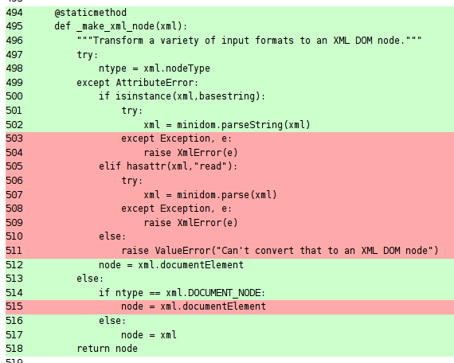

I've got a little bit of downtime at the moment, and I'm determined to spend it keeping my Python skills and projects up to date. First on the list: testing.
Almost all of my open-source projects come with automated tests of some kind. Some are woefully under-tested (m2wsgi, myppy) while others have collected a test case for just about every feature (pyenchant, esky). But they could all stand to benefit from a little more testing discipline.
If you have any of your own python projects, ask youself: do they work on older versions of python? How about on 2.7? On 3.2? How about on Windows or OSX? Are you sure?
I want to be able to answer a confident yes to all these questions, so I'm embarking on a rather ambitious plan over the coming months: full test suites, with 100% code coverage, tested on Linux, Windows and OSX, across python 2.5, 2.6, 2.7 and 3.2.
I'll probably fail at such a lofty goal. That's OK. Having 100% test coverage is no panacea anyway. But my code will be better for the effort and I'll add some powerful new toys to my toolkit along the way.
{% endmark %}Fortunately Python has a very rich ecosystem of testing software; there's an overview here if you want the birds-eye view. The tools I've chosen for this little adventure are:
My target for today was the dexml project. It's a pretty small codebase and it already had a good suite of tests, so it seemed like a very non-threatening place to start. Here's the testing status of the 0.4.2 release
{% syntax sh %}$> # It contains around 1300 lines of code $> sloccount dexml/ | grep -C1 SLOC-by-Language SLOC Directory SLOC-by-Language (Sorted) 1279 dexml python=1279 $> $> # Almost a third of which are for the tests $> sloccount dexml/test.py | grep -C1 SLOC-by-Language SLOC Directory SLOC-by-Language (Sorted) 417 top_dir python=417 $> $> # Of which there are 20, and they all pass $> nosetests ................................... ---------------------------------------------------------------------- Ran 20 tests in 0.265s OK $>{% endsyntax %}20 tests might not sound like many, but this is a small library and each test covers a fair bit of ground.
So there's almost half as much code for the tests as there is for the functionality of the module itself - must be pretty well tested right? Let's find out...
To see what sort of test coverage we've actually got, let's run nose with its builtin coverage support:
{% syntax sh %}$> pip install coverage ... ... uninteresting output ... ... $> $> nosetests --with-coverage --cover-package=dexml --cover-html .................... Name Stmts Exec Cover Missing -------------------------------------------- dexml 305 275 90% 187, 216, 343-344, 347, 360-361, 378-379, 385, 401-404, 406-409, 503-511, 515, 534, 548-550 dexml.fields 497 437 87% 86, 102, 106, 119-120, 124, 126, 209, 226, 244-246, 250, 268, 279, 292, 319, 336, 378, 381, 435-444, 450-452, 555, 567-568, 581-582, 669, 711, 716, 721, 727-728, 734, 739-740, 742, 746-747, 749, 770, 774, 784, 792-793, 807-810, 822 -------------------------------------------- TOTAL 802 712 88% ---------------------------------------------------------------------- Ran 20 tests in 0.265s OK $> $> # generated report is on the "cover" subdirectory $> ls cover/ dexml.fields.html dexml.html index.html {% endsyntax %}Here we have asked nose to track coverage information and to generate a pretty HTML report. Passing the "--cover-package" option just ensures that it doesn't bother capturing coverage information about any third-party or standard-library modules, since we're only interested in the dexml module itself.
The last release of dexml had 88% test coverage. Looked at as a percentage that sounds pretty high, but think of it this way: almost one-fifth of the code is completely untested. I definitely need to do better.
All of the numbers that coverage has printed out under "Missing" are the linenumbers that haven't been tested. You could trace them back to the source by hand, but it's much easier to look at the HTML report. Here's a screenshot:
I love the simplicity of this view: green lines have been tested, red lines haven't. And with it comes a simple and clear imperative: kill the red lines.
The "_make_xml_node" method show above is a helper designed to take any sort of input that the user might give (a bytestring, a unicode string, a file-like object) and return a XML DOM object. All of my tests have been passing in short strings of valid XML, so the code the handling other inputs or error conditions is not getting tested.
It was a simple matter to add another test that passes in a variety of different objects to be converted into XML, resulting in a very pleasing bit of feedback:
{% syntax sh %}$> nosetests --with-coverage --cover-package=dexml --cover-html ..................... Name Stmts Exec Cover Missing -------------------------------------------- dexml 305 283 92% 187, 216, 343-344, 347, 360-361, 378-379, 385, 401-404, 406-409, 515, 534, 548-550 dexml.fields 497 437 87% 86, 102, 106, 119-120, 124, 126, 209, 226, 244-246, 250, 268, 279, 292, 319, 336, 378, 381, 435-444, 450-452, 555, 567-568, 581-582, 669, 711, 716, 721, 727-728, 734, 739-740, 742, 746-747, 749, 770, 774, 784, 792-793, 807-810, 822 -------------------------------------------- TOTAL 802 720 89% ---------------------------------------------------------------------- Ran 21 tests in 0.276s OK {% endsyntax %}One percent closer to full coverage!
I spent a good few hours this morning rinsing and repeating the above, slowly working the coverage percentage up to 100%. The end result was so satisfying that I re-ran the tests at least ten times when I was finished, just to bask in my achievement:
{% syntax sh %} $>nosetests --with-coverage --cover-package=dexml --cover-html ................................... Name Stmts Exec Cover Missing -------------------------------------------- dexml 328 328 100% dexml.fields 502 502 100% -------------------------------------------- TOTAL 830 830 100% ---------------------------------------------------------------------- Ran 35 tests in 0.404s OK {% endsyntax %}Taking another look at the linecounts, I now have around 1600 lines of code in total and 750 lines of tests – so the ratio of tests to functionality has gone from 1:2 up to almost 1:1.
{% syntax sh %} $> sloccount dexml/ | grep -C1 SLOC-by-Language SLOC Directory SLOC-by-Language (Sorted) 1650 dexml python=1650 $> $> sloccount dexml/test.py | grep -C1 SLOC-by-Language SLOC Directory SLOC-by-Language (Sorted) 750 top_dir python=750 {% endsyntax %}Was it worth it? You bet. I uncovered four corner-case bugs including one that could silently corrupt your data. (Don't worry, dexml users, to trigger it you would have had to construct your models in a very strange way. It won't have bitten you, but I'm sure you'll be pleased it's gone!)
Bugs aside, I was very pleased to discover another side effect of striving for 100% test coverage. It turns out the easiest was to increase your test coverage is to delete code. Several old corners of the dexml parser were dealig with model configurations that just make no sense in practice. The effort of trying to write a test case for them showed me just how silly such configurations would be, and gave me to confidence to just rip out that code entirely.